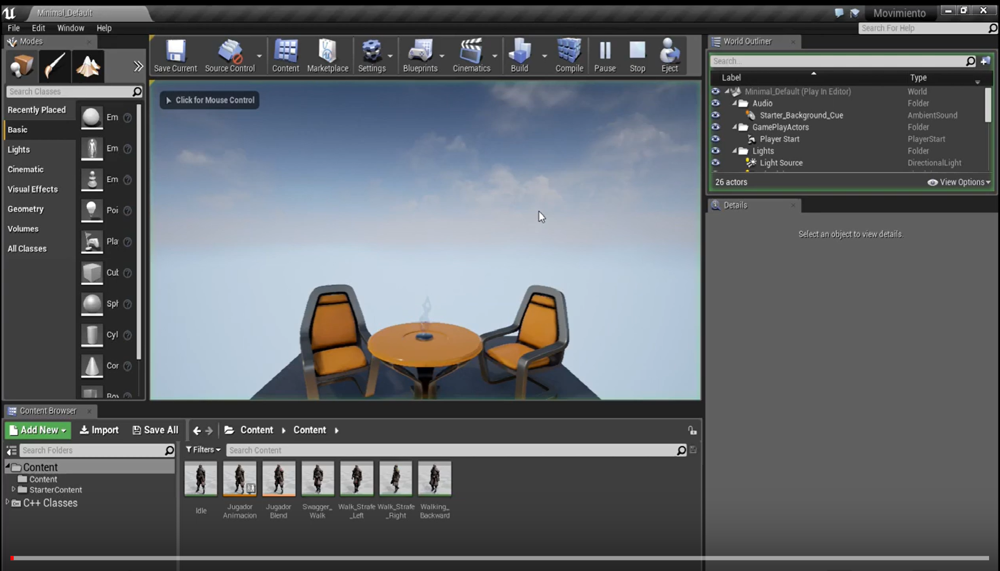

Implantar un sistema de animaciones a un personaje en primera persona en Unreal Engine 4
Juan José Gómez Simón
En este artículo, se hará un explicación introductoria y básica a cómo implantar un sistema de animaciones a un modelado 3D importado mediante el uso de "BluePrints".